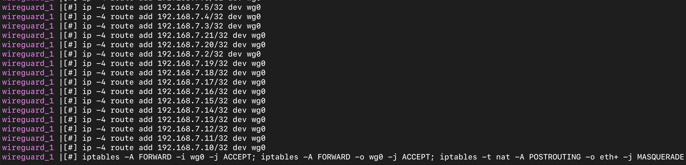

使用WireGuard组建虚拟局域网
什么是wireguard？
以下引用自 WireGuard 项目主页:
WireGuard 是一种极其简单但快速且现代的 VPN，它利用了最先进的加密技术。它的目标是比 IPsec 更快、更简单、更精简和更有用，同时避免令人头疼的问题。旨在提供比 OpenVPN 更高的性能。WireGuard 被设计为在嵌入式接口和超级计算机等上运行的通用 VPN，适用于许多不同的环境。最初仅支持 Linux 平台，现在可以进行跨平台（Windows、macOS、BSD、iOS、Android）的广泛部署。目前仍然在大力开发中，但已经被认为是业内最安全、最容易使用和最简单的 VPN 解决方案。
本文主要介绍如何使用WireGuard组建虚拟局域网，并结合自己的实践经验，给出笔者在使用wireguard中遇到的问题。
关键词：WireGuard
前言
有人可能会问，为什么不使用Frp或其他端口映射工具？需求之一是希望七层应用（包括DNS）都不需要特别的设置：而端口映射在应用层，每当有一个新的应用都要重新配置一遍。VPN虚拟出来的网络处于网络层，路由规则一次性配好后，就不需要再为了新的七层应用再配置一遍。
部署前提：需要一台可以被公网访问的电脑，不管是通过DMZ，还是一对一NAT的方式，或者是其他方式。
基础设置
Server端
为了方便，这里使用docker。
注：安装docker环境不在本文的讨论范围内。
安装Wireguard内核
1 | sudo apt-get install wireguard-dkms -y |
Docker开启IP地址转发
1 | cat <<EOF | sudo tee /etc/modules-load.d/containerd.conf |
拉取Wireguard镜像
1 | docker pull lscr.io/linuxserver/wireguard:latest |
设置Server端环境变量
1 | # env |
设置docker-compose.yml
主要是server端容器配置
1 | version: "3.3" |
启动Server端
1 | docker-compose up -d |

Client端
从config目录下选择一个peerX，文件夹内的peerX.conf就是客户端的配置文件。
客户端使用wg命令行的方式进行安装。
1 | sudo apt-get install wireguard-dkms -y # 如果当前内核版本大于5.6则不用安装 |
将配置文件复制到/etc/wireguard文件夹，执行以下命令启动
1 | wg-quick up peerX # peerX要和配置文件名的basename一致 |
如果在启动过程发现了如下问题：
1 | /usr/bin/wg-quick: line 32: resolvconf: command not found |
执行以下命令修复
1 | sudo ln -s /usr/bin/resolvectl /usr/local/bin/resolvconf |
启动完毕以后检查执行情况
1 | wg |

附加设置
1 | PersistentKeepalive = 1 |
上面的设置是每隔1秒发送一个数据包，保持数据连接
进阶设置
Wireguard全互联架构
基于WireGuard协议的VPN工具
未完待续...